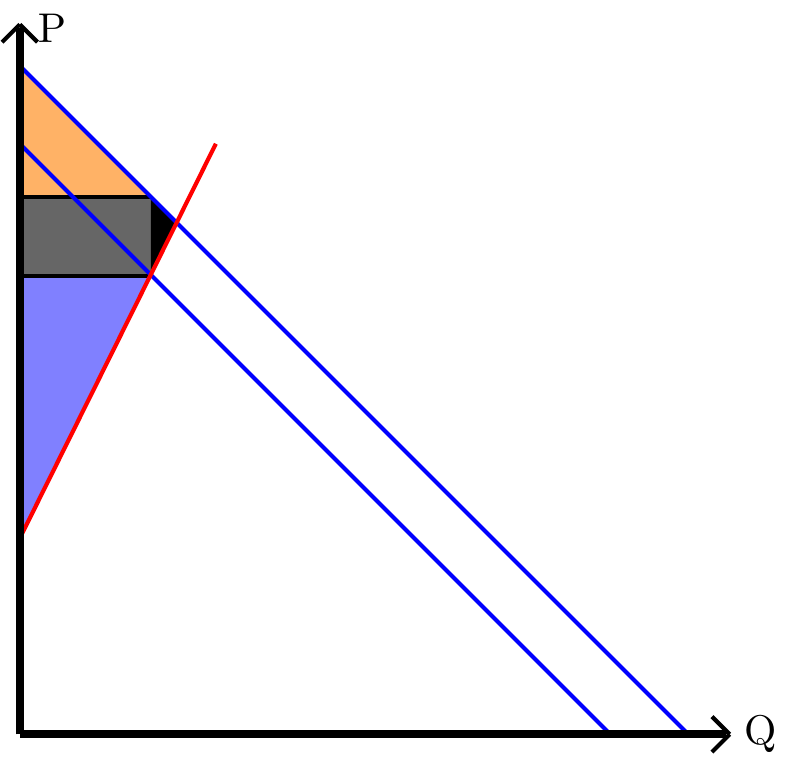
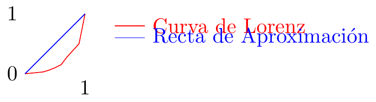

11 Sobre capítulo IV:
11.0.1 :
Reconozca la externalidad y su tipo, es decir, si es positiva o negativa, en los siguientes casos y proponga en que caso podría ser bueno aplicar un impuesto o un subsidio.
Una empresa de textiles sintéticos que da una alta taza de empleo en la zona contamina las aguas de los ríos cercanos.
Una empresa forestal imaginaria de monocultivo en la provincia del Malleco erosiona los suelos, esta produce un 15% del PIB nominal de Chile.
Un criadero de caballos usados para deportes nacionales amansa a las crías en conjunto a una clínica que usa a estos para terapia.
Una fundación para ancianos tiene una buena administración, pero no tiene los suficientes recursos para calefacción.
RESPUESTA:
- Externalidad Negativa, se le debería aplicar un impuesto.
- Externalidad Negativa, se le debería aplicar un impuesto.
- Externalidad positiva, al no tener problemas por enunciado, se le debería mantener igual.
- Externalidad positiva, se le debería aplicar un subsidio.
11.0.2 :
Para un mercado de libros tenemos las siguientes funciones de oferta y demanda:
\[ \begin{array}{cc} P(Q)=5+2Q & Q(P)=15-P\\\end{array} \]
Calcule cuanto es la máxima recaudación posible teniendo en cuenta la curva de Laffer.
RESPUESTA:
Primero calculamos la demanda inversa: \[ Q(P)=15-P \longleftrightarrow P(Q)=15-Q \]
Inserto gráfico con un impuesto arbitrario para entender los siguientes pasos:
Como se podrá ver, mientras más impuesto, crecerá de forma mayor el peso muerto, entonces intentaremos ver cuanto tiene que ser el impuesto, para que sea la máxima recaudación posible, para esto el peso muerto tiene que ser igual a lo recaudado
\[ Q_i\cdot (P_f-P_i)=\frac{(P_f-P_i)\cdot (Q_f-Q_i)}{2} \]
\[ 2Q_i=Q_f-Q_i \] \[ 3Q_i=Q_f \]
Si calculamos el punto de equilibrio inicial nos da \((3+\frac{1}{3},11+\frac{2}{3})\), entonces reemplazamos en la ecuación:
\[ Q_f=3\cdot\frac{10}{3} \] \[ Q_f=10 \]
Buscamos la nueva demanda con el nuevo punto de equilibrio.
\[ P_d(Q)=a-Q \longleftrightarrow a-10=5+2\cdot10 \] \[ a=25+10=35 \] \[ P_di(Q)=35-Q \]
Con esto calculamos el \(P_f\):
\[ P_di(10/3)=35-\frac{10}{3}\leftrightarrow P_f=31.66 \]
finalmente la máxima recaudación es: \[ Q_i\cdot (P_f-P_i) \] \[ \frac{10}{3}\cdot (31+\frac{2}{3}-(11+\frac{2}{3})) \] \[ \frac{10}{3}\cdot 20=66.66 \]
Lo recaudado es $66.66 por unidad.
11.0.3 :
Defina con sus palbras los siguintes terminos: 1) Déficit presupuestario: 2) Superávit presupuestal: 3) Equidad horizontal: 4) Equidad vertical: 5) Impuestos proporcionales: 6) Impuestos regresivos: 7) Impuestos progresivos:
RESPUESTA:
- Déficit presupuestario: Es cuando el gobierno gasta más de lo que recibe.
- Superávit presupuestal: Es cuando el gobierno gasta menos de lo que recibe.
- Equidad horizontal: Los contribuyentes con misma capacidad de pago, pagan igual cantidad.
- Equidad vertical: Los contribuyentes con mayor capacidad de pago, pagan más.
- Impuestos proporcionales: Es cuando todos pagan los impuestos con la misma fracción de sus ingresos,
- Impuestos regresivos: Es cuando los contribuyentes de mayor ingreso pagan una menor fracción de sus ingresos en impuestos con respecto a los que tienen menos.
- Impuestos progresivos: Es cuando los contribuyentes de menor ingreso pagan una menor fracción de sus ingresos en impuestos con respecto a los que tienen más.
11.0.4 :
Un mercado no regulado, está constituido por un solo productor y varios compradores, tiene de funciones de oferta y demanda \(P(Q)=1+Q\) y \(P(Q)=5-Q\) respectivamente. El productor se corrompió y decidió aprovecharse del mercado y obtener el máximo beneficio posible. ¿Cuánto será su excedente?
RESPUESTA
Para esto, usaremos las siguientes ecuaciones:
Para calcular el máximo de la curva de Laffer:
\[ \frac{(P_f-P_i)\cdot (Q_i-Q_f)}{2}=Q_f\cdot (P_f-P_i) \]
Para calcular el excedente total: \[ EC = \int_{0}^{Q_f}{P_f-P_s(Q) \ dQ} + Q_f\cdot (P_f-P_i) \]
Primero calculamos el punto de equilibrio inicial, este será \((2,3)\)
Luego el punto de equilibrio final:
\[ \frac{(P_f-P_i)\cdot (Q_i-Q_f)}{2}=Q_f\cdot (P_f-P_i) \] \[ \frac{(Q_i-Q_f)}{2}=Q_f \] \[ Q_f=\frac{2}{3} \]
Ahora el \(P_f\) lo vemos con la demanda:
\[ P(2/3)=5-\frac{2}{3}=\frac{13}{3} \]
Finalmente el nuevo punto inicial es \((2/3,13/3)\)
Ahora reemplazamos en la ecuación del nuevo excedente: \[ EC = \int_{0}^{2/3}{\frac{5}{3}-1+Q \ dQ} + \frac{2}{3}\cdot (\frac{13}{3}-3) \] \[ EC = \frac{26}{9}+\frac{4}{9}+ \frac{2}{3}\cdot \frac{4}{3} \] \[ EC = \frac{26}{9}+\frac{4}{9}+ \frac{2}{3}\cdot \frac{4}{3} \] \[ EC = \frac{38}{9} \]
11.0.5 :
Una empresa tiene la siguiente función de producción: \[ Q(K,L)=K^3+2K^2+KL^2+L^3 \]
En el mercado de la empresa, cada unidad producida es vendida por $3 dólares.
Determine la función de la producción media de trabajo.
Determine la función del producto marginal del capital.
Asuma un \(\bar{K}=1\) y una cantidad de trabajadores \(\bar{L}=2\) ¿Cuánto es el retorno del trabajo?
RESPUESTA
\(\frac{Q(K,L)}{L}=\frac{K^3+2K^2}{L}+KL+L^2\)
\(Q'(K,L)=3K^2+4K+L^2\)
El retorno es la segunda derivada de la producción, por lo que será:
\[ Q''(K,L) = 6L \]
Evaluamos:
\[ Q''(1,2)=6\cdot 1=6 \]
11.0.6 :
Tenemos la siguiente tabla que representa el porcentaje de población acumulado de la población según su ingreso porcentual acumulado:
| decil: | Ingresos: |
| 0.1 | 0.01 |
| 0.2 | 0.02 |
| 0.3 | 0.03 |
| 0.4 | 0.06 |
| 0.5 | 0.1 |
| 0.6 | 0.15 |
| 0.7 | 0.28 |
| 0.8 | 0.39 |
| 0.9 | 0.5 |
| 1 | 1 |
Calcule la desigualdad con el coeficiente de Gini.
Grafique la curva de Lorenz.
RESPUESTA
- Usamos la formula:
\[ G=1-\left|\sum_{k=0}^{n-1}\left(X_{k+1}-X_k\right)\left(Y_{k+1}+Y_k\right)\right| \]
Las condiciones extremas que se pueden cumplir son:
\(G=0\): todos los ciudadanos tienen los mismos ingresos.
\(G=1\): todos los ingresos los tiene solo 1 ciudadano.
Y esto da: \[ G=1-0.01+0.01+0.01+0.03+0.04+0.05+0.013+0.011+0.011+0.05 \]
\[ G=1-0.235 \] \[ G=0.765 \]

11.0.7 :
Tenemos la siguiente función de producción: \[ Q(K,L)=7K^2L^3-3K\^3L \]
Calcule las siguientes medidas de forma genérica y calcule según el tipo de media la utilidad si cada producción vale $2 dolares o el tipo de retorno evaluándolas con \(\bar{K}=1\) y un \(\bar{L}=2\):
¿Para qué valor de \(L\), con \(\bar{K}=2\) el retorno de capital es una constante a escala?
RESPUESTA
| Medida: | Forma genérica: | Utilidad: |
| Producto marginal del trabajo: | \[21K^2L^2-3K^3\] | \[\$162\] |
| Producto marginal del capital: | \[14L^3K-6K^2L\] | \[\$200\] |
| Productividad media del trabajo: | \[7K^2L^2-3K^3\] | \[\$50\] |
| Productividad media del capital: | \[7L^3K-3K^2L\] | \[\$100\] |
| Retornos de trabajo: | \[42K^2L\] | \[42, \text{es creciente.}\] |
| Retornos de capital: | \[14K^3 - 3K^3L\] | \[8, \text{es creciente.}\] |
\[ \text{ret}(K,L)=14K^3 - 3K^3L \] \[ \text{ret}(4,L)=14\cdot 2^3 - 3\cdot 2^3L=1 \] \[ 14\cdot 8 - 3\cdot 8 L=1 \] \[ 112 - 24L=1 \] \[ 24L=111 \] \[ L=\frac{111}{24} \]